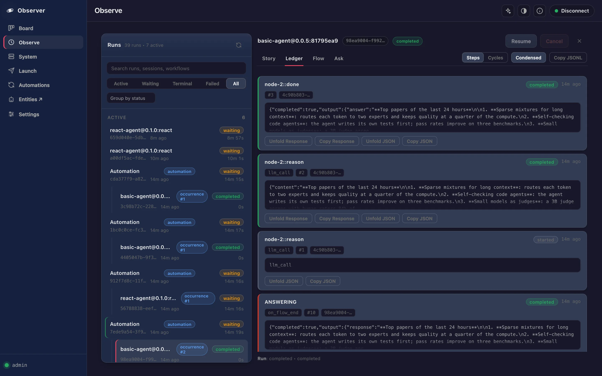

Start as a researcher
Run research workflows that search, cite and export their findings, review every step they took, and keep what matters in a memory that lasts. The gateway ships two research workflows ready to run.
Install, try it, make it yours
Install and choose a strong model 15 min
curl -LsSf https://raw.githubusercontent.com/lpalbou/AbstractFramework/main/scripts/install.sh | shResearch workflows make many LLM calls, so pick the strongest model your machine fits in the console’s Models tab, or add a cloud provider under Providers.
Run deep-research 20 min
deep-research investigates a request, runs rounds of adversarial review, keeps a verified source ledger and exports Markdown, PDF and DOCX. Its inputs are the request, a viewpoint, and an effort of quick, standard or thorough. It serves the plain chat interface, so AbstractCode can run it directly:
abstractcode login --token <admin token> # once; the installer’s summary prints this line
abstractcode --workflow deep-researchOr open the Observer, choose Launch and run it once. Its research agents use a read-only evidence allowlist (web search, fetch, skim, read file); only the export step writes files.
Follow every step 10 min
In the Observer, open the run and replay its ledger: each investigation round, every search and fetch, the reviewer’s guidance and the export manifest with file paths and hashes. Nothing is summarized away.

Generate hypotheses with co-scientist 15 min
co-scientist grounds itself in the literature through the deep-research investigation flows, then cycles through generation, reflection, Elo-ranked pairwise debate and evolution, and ends with a reviewed research overview. Launch it from the Observer.
Then make it yours
A weekly literature watch
Schedule a growing automation every 7 days: "Find new papers on <your topic> since the previous run and summarize them with links." Each run sees the previous ones and reports what is new.
Your own research flow
The shipped research workflows are authored as Flow graphs, and their editable sources are published. Start from one, change the review rounds or the export, and publish your variant under a new name.
A lasting memory
Give an agent a memory that forms records, recalls them by cue and strengthens what it actually used, with AbstractMemory; or create an entity that keeps its own memory and diary in AbstractEntity.